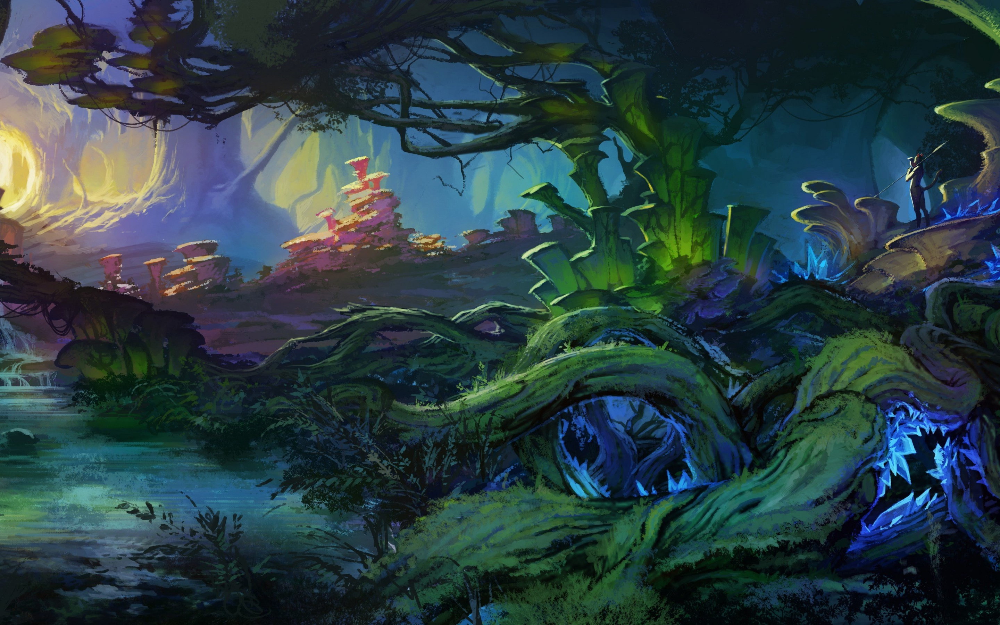

Plants
The plants are food and poison Plants are one of six big groups (kingdoms) of living things. They are autotrophic eukaryotes, which means they have complex cells, and make their own food. Usually they cannot move (not counting growth). Plants Temporal range: Mesoproterozoic–present Had'n Archean Proterozoic Pha. Diversity of plants image version 5.png Scientific classification Domain: Eukaryota (unranked): Archaeplastida Kingdom: Plantae sensu Copeland, 1956 Divisions Chlorokybophyta Mesostigmatophyta Chlorobionta Kenrick & Crane 1997 Chlorophyta Streptobionta Kenrick & Crane 1997 Klebsormidiophyta Charophyta (stoneworts) ?Chaetosphaeridiales Coleochaetophyta Zygnematophyta Embryobiotes Kenrick & Crane 1997(land plants) Marchantiophyta Bryophyta Anthocerotophyta †Horneophyta †Aglaophyta Tracheophyta (vascular plants) Synonyms Viridiplantae Cavalier-Smith 1981[1] Chlorobionta Jeffrey 1982, emend. Bremer 1985, emend. Lewis and McCourt 2004[2] Chlorobiota Kenrick and Crane 1997[3] Chloroplastida Adl et al., 2005 [4] Phyta Barkley 1939 emend. Holt & Uidica 2007 Cormophyta Endlicher, 1836 Cormobionta Rothmaler, 1948 Euplanta Barkley, 1949 Telomobionta Takhtajan, 1964 Embryobionta Cronquist et al., 1966 Metaphyta Whittaker, 1969 Green leaves and yellow flowers of a daffodil plant Plants include familiar types such as trees, herbs, bushes, grasses, vines, ferns, mosses, and green algae. The scientific study of plants, known as botany, has identified about 350,000 extant (living) species of plants. Fungi and non-green algae are not classified as plants. Most plants grow in the ground, with stems in the air and roots below the surface. Some float on water. The root part absorbs water and some nutrients the plant needs to live and grow. These climb the stem and reach the leaves. The evaporation of water from pores in the leaves pulls water through the plant. This is called transpiration. A plant needs sunlight, carbon dioxide, minerals and water to make food by photosynthesis. A green in plants called chlorophyll traps the energy from the Sun needed to make food. Chlorophyll is mostly found in leaves, inside plastids, which are inside the leaf cells. The leaf can be thought of as a food factory. Leaves of plants vary in shape and size, but they are always the plant organ best suited to capture solar energy. Once the food is made in the leaf, it is transported to the other parts of the plant such as stems and roots.[5][6] The word "plant" can also mean the action of putting something in the ground. For example, farmers plant seeds in the field. Photosynthesis is a process that is taken place by the leaves on the plant. The leaves are the only parts of a plant that can do this process (as they adapted). This is also known as how the plant gets its food.You can make the process quicker by adding more CO2, light and chlorophyll.